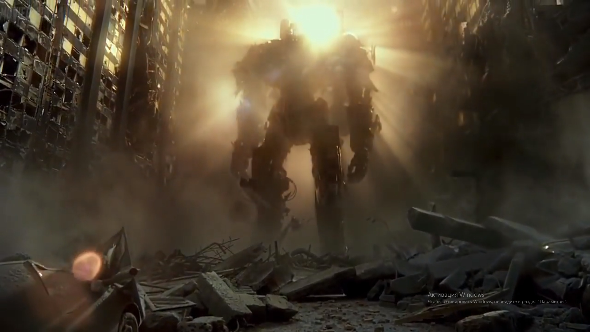
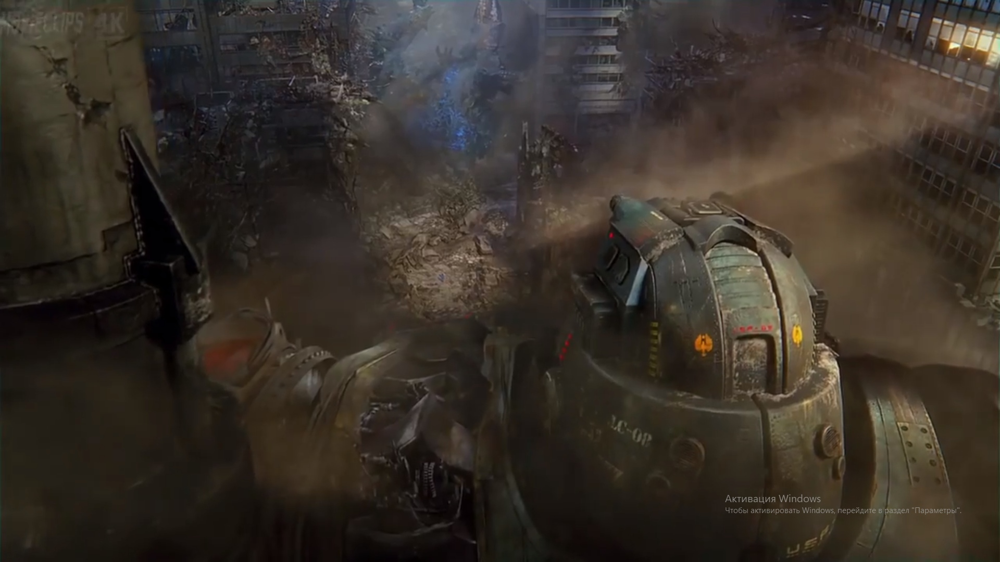
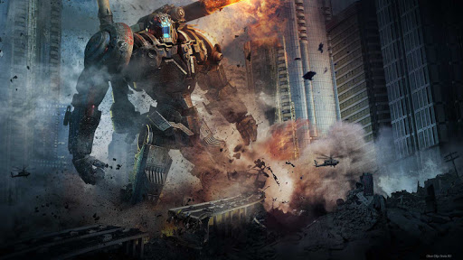

Название: Койот Танго
Серия: 1
Вес: 7450 тон
Рост: 85 м
История
В 2016 году Койот Танго отправляется в Токио во время нападения Кайдзю Онибабы. Егерю удается уничтожить Кайдзю и спасти единственного уцелевшего во время нападения ребенка, однако в бою Тамсин теряет сознание и Стэкер заканчивает его в одиночку.После боя в Токио у Тамсин обнаруживают рак и обоих пилотов отстраняют от управления Егерем - Севье для прохождения лечения, Пентекоста - во избежание негативных последствий нейронных и физических перегрузок во время пилотирования.
Вскоре Егерь получает новых пилотов, который управляют им вплоть до его уничтожения в 2021.
Описание
Койот Танго - японский Егерь 1-ой серии, один из самых старых, и самый большой Егерь на вооружении до 2021 года.


